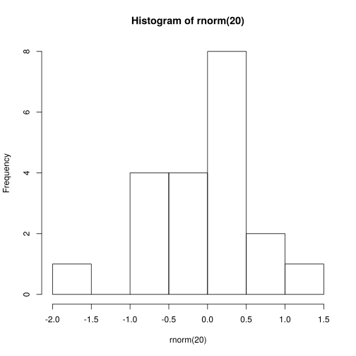

a <- c(7, 3)
mean(a)
b <- a + 3
mean(b)
5
8
An example Jupyter file, illustrating the use of R code chunks.
You can create an HTML or PDF output file by simply selecting
`File -> Download as -> HTML (.html)` or `File -> Download as -> PDF via LaTeX (.pdf)`To generate a document from the command line, you can do the following:
jupyter nbconvert demo-R.ipynb --to html # for html
jupyter nbconvert demo-R.ipynb --to pdf # for pdfGenerating PDF involves converting the Notebook to LaTeX, and that seems to fail for notebooks using R.
Here’s an introduction to our critical discovery. We have some code to display but not evaluate: exp(7), and we can embed the code in a static code block as follows:
a = 7 %% 5
b = exp(a)This document will focus on embedding math and code and not on standard Markdown formatting. There are lots of sources of information on Markdown. RStudio has good information on R Markdown (including Markdown formatting).
This can be done with the following syntax.
Here is an inline equation \(f(x) = \int f(y, x) dy\). (You may need to make sure that no space appears immediately after the first “$”.
Here’s a displayed equation \[ f_\theta(x) = \int f_\theta(y, x) dy. \]
Here’s an R code chunk
a <- c(7, 3)
mean(a)
b <- a + 3
mean(b)Here’s another chunk
mean(b)Note above that output is not printed interspersed with the code, as one would generally want. So you need to break up your code into chunks such that the output appears immediately following the code.
Also note above that later chunks have access to result from earlier chunks (i.e., state is preserved between chunks).
Let’s make a plot as follows.
hist(rnorm(20))
You can’t insert inline code to be evaluated.
To control whether code is evaluated, simply choose whether or not to run the chunk (i.e., using the evaluation button in the toolbar). I don’t believe you have control over whether the code in a chunk is printed when creating an output file.
a <- c(7, 3)
mean(a)
b <- a + 3
mean(b)I’m not aware of a direct way to cache the results of a calculation to save time when running the code in a notebook multiple times.
Unlike in a notebook with Python chunks, I haven’t been able to use the %% magic to embed Python or bash code chunks.
I’m not aware of a way to directly source code from an external file as the code in a code chunk.
Here we’ll see code and output of a code chunk do not overflow the page but the line breaks may be awkward in HTML output and long lines in the notebook document will cause a horizontal scrollbar to be inserted.
b <- "Statistics at UC Berkeley: We are a community engaged in research and education in probability and statistics. In addition to developing fundamental theory and methodology, we are actively"
# Statistics at UC Berkeley: We are a community engaged in research and education in probability and statistics. In addition to developing fundamental theory and methodology, we are actively
vecLongName = rnorm(100)
a = length(mean(5 * vecLongName + vecLongName - exp(vecLongName) + vecLongName * vecLongName, na.rm = TRUE))
a = length(mean(5 * vecLongName + vecLongName)) # this is a comment that goes over the line by a good long ways
a = length(mean(5 * vecLongName + vecLongName - exp(vecLongName) + vecLongName, na.rm = TRUE)) # this is a comment that goes over the line by a good long long long long long long long long ways
# long output usually is fine
rnorm(30)Statistics at UC Berkeley: We are a community engaged in research and education in probability and statistics. In addition to developing fundamental theory and methodology, we are activelyWe can tidy up the code manually to improve where the lines break.
# breaking up a string
b <- "Statistics at UC Berkeley: We are a community engaged in research
and education in probability and statistics. In addition to developing
fundamental theory and methodology, we are actively"
# breaking up a comment
# Statistics at UC Berkeley: We are a community engaged in research and
# education in probability and statistics. In addition to developing
# fundamental theory and methodology, we are actively
# breaking up code lines
vecLongName = rnorm(100)
a <- length(mean(5 * vecLongName + vecLongName - exp(vecLongName) +
vecLongName * vecLongName, na.rm = TRUE))
a <- length(mean(5 * vecLongName + vecLongName)) # this is a comment
# that goes over the line by a good long ways
a <- length(mean(5 * vecLongName + vecLongName - exp(vecLongName) +
vecLongName, na.rm = TRUE)) # this is a comment that goes over the
# line by a good long long long long long long long long waysIt’s possible to insert references and a bibliography into a Jupyter document but it’s slightly involved so we won’t go into it here.